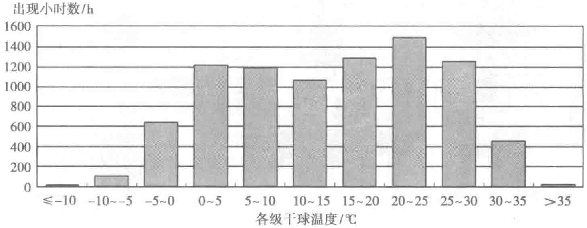
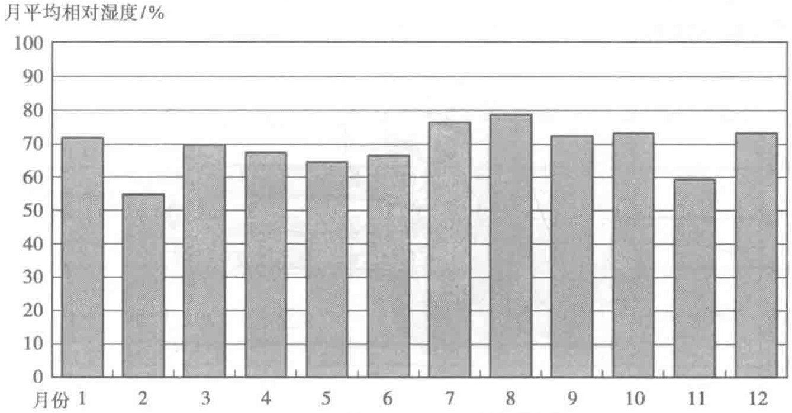

表10-25为宿迁市全年各级干球温度的分布情况，可以看出，宿迁大部分时间的温度都在-5～35℃之间，空调制冷设备大部分运行时间内工况稳定。

由图10-26可以看出，宿迁市全年相对湿度都在50%～70%之间，全年春秋两季的湿度处理工作量较小，只是在炎热的夏季除湿量会相对较大。

2. 系统说明
京东集团华东数据中心1#模块的整体设计冷负荷为7427kW，制冷采用水冷式冷水系统。整个空调制冷系统由冷源系统、管路系统、末端空调系统和辅助系统等构成。数据中心专门设置了制冷机房，主要制冷设备放在室内。系统的主要流程图如图10-27所示。
冷冻水系统的设计供回水温度为10～16℃，主要设备采用N+1冗余配备，保证系统不会由于某一设备故障而受到影响；整个水系统管路均采用环状管路，主环路节点之间设置双阀门，保障系统可用性；并设置在线式蓄冷罐，可以无间断地为系统提供15min备用冷源。空调制冷系统的整体设计满足并高于Uptime Tier Ⅲ级别的要求，同时设置了以板式换